MD200#
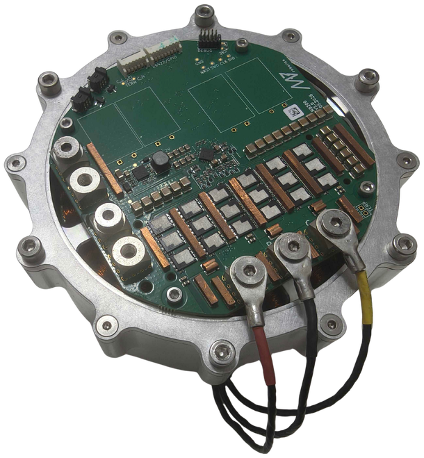
Fig. 3 MD200 integrated with the AKE90-8 motor#
General parameters#
MD200 is a high-current brushless motor controller targeted at robotic actuators with high motor phase current and power requirements, such as the AKE90-8. It shares the control algorithm (FOC), encoder, FDCAN communication interface and operation modes (position PID, velocity PID, impedance, profile position and profile velocity) with the MD80, so all software tools and configuration procedures described for MD80 apply to MD200 as well.
General parameters table:
Parameter |
Value |
|---|---|
Nominal Input Voltage Range |
24 - 48 VDC |
Maximum Input Voltage Range |
12 - 60 VDC |
Max Input Current (M4 terminals) |
175 A |
Max Continuous Phase Current w/o cooling (see Thermal characteristics) |
70 A at 24 - 48 V, 60 A at 60 V |
Max Peak Phase Current |
200 A for approx. 10 s (see Peak current) |
Max Power |
2 kW* |
PWM Frequency |
40 kHz |
Termination resistor |
optional, solder pads on PCB |
FDCAN Baudrate (adjustable) |
1/2/5/8 Mbps |
Position PID Controller Execution Frequency |
1 kHz |
Velocity PID Controller Execution Frequency |
5 kHz |
Impedance Controller Execution Frequency |
40 kHz |
Torque Control Execution Frequency |
40 kHz |
Torque Bandwidth (adjustable) |
50 Hz - 2.5 kHz |
External encoder support |
yes, SPI and RS422 (optional) |
External 5V power supply max current |
150 mA |
Weight |
83 g |
Minimum firmware version |
3.0.0 |
*The maximum power of MD200 is still under investigation and this value may change. The achievable power depends strongly on cooling, supply voltage and the motor used. In the free-air tests described in Thermal characteristics, MD200 delivered approx. 1 kW of mechanical power for 120 s (60 V, 60 A) and up to 1.58 kW for 14 s (60 V, 150 A).
Important
MD200 requires firmware version 3.0.0 or newer. See Downloads for the latest firmware.
Mechanical integration#
The 3D model of the controller can be downloaded here.
Mounting#
MD200 is fixed with four M2.5x5 DIN 912 screws placed on a Ø93 mm hole circle (top view). The screws are threaded into PCB mounting elements, e.g. bosses on the motor rear cover, as shown in section A-A. The Ø3.1 mm step of the mounting element centers the PCB, and the Ø4.8 mm shoulder supports it (PCB mounting element).
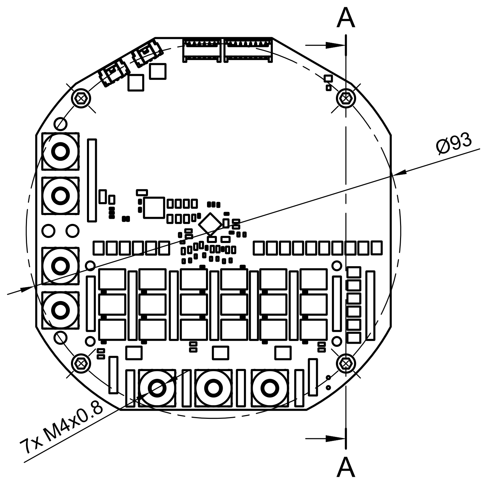
Fig. 4 Top view - mounting holes, terminals and section line A-A#
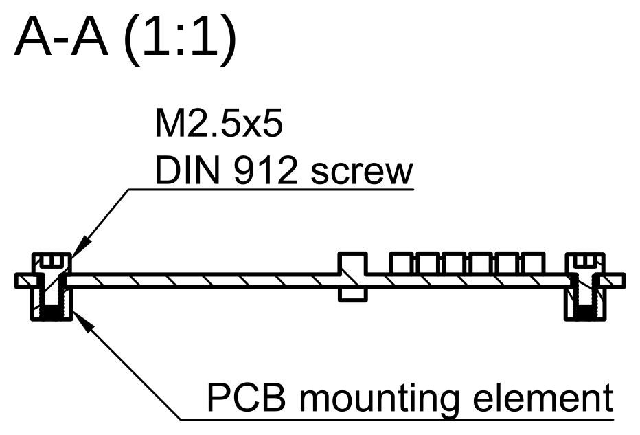
Fig. 5 Section A-A - PCB fixed to the mounting elements#
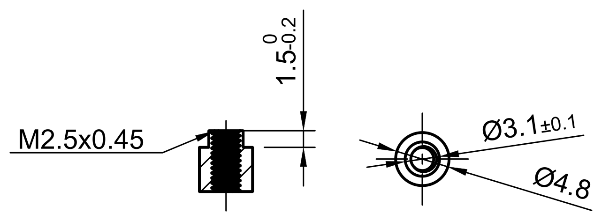
Fig. 6 Recommended dimensions of the PCB mounting element#
Warning
Always make sure the head of the screw does not touch any copper or components outside the mounting hole outline. A short circuit between the screw head and the copper planes can permanently damage the controller.
Encoder and magnet#
Place the diametrically magnetized magnet on the motor shaft, on the same rotation axis as the encoder, at a distance of 1.2 ±0.2 mm from the bottom surface of the PCB. Section C-C shows the position of the encoder on the board, and detail D shows the magnet and the encoder in close-up.
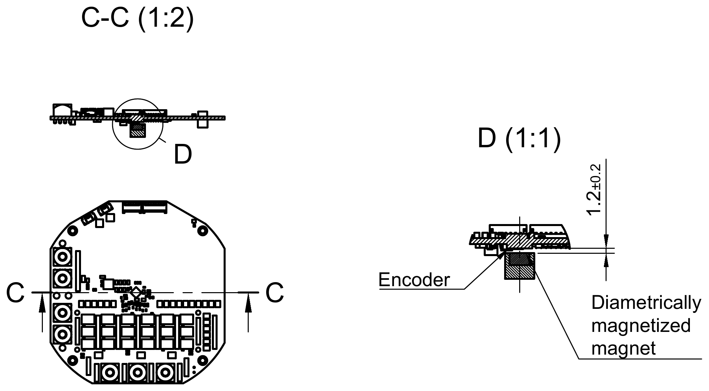
Fig. 7 Section C-C and detail D - magnet and encoder placement#
Cooling and thermal interface#
Most of the MD200 losses are generated in the power stage (MOSFETs). The values in Thermal characteristics were measured in free air, without any heatsink. A heatsink on the power stage lowers the MOSFET temperature, which increases the continuous phase current and extends the time for which MD200 can deliver peak current. The best results are achieved when the heatsink is also thermally connected to a larger metal part, such as the actuator housing.
To make the integration easy, we prepared a reference radiator. It can be used as is, or as a starting point for a heatsink integrated into the actuator housing. The 3D model of the reference radiator can be downloaded here.
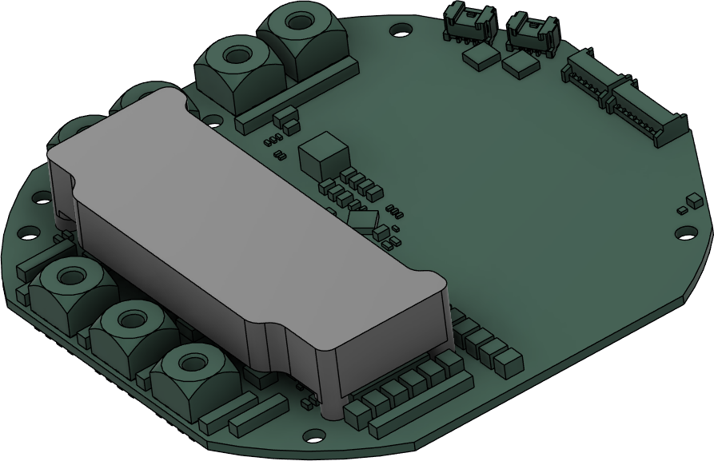
Fig. 8 MD200 with the reference radiator mounted on the power stage#
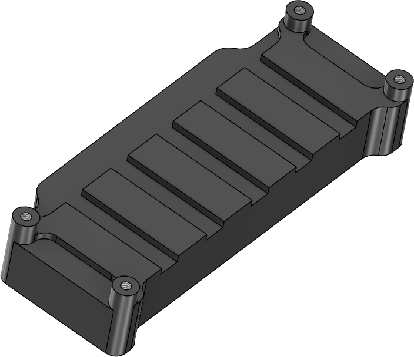
Fig. 9 Reference radiator, side facing the MOSFETs#
Mounting
The radiator is placed on the top side of the board, over the power stage, and fixed with four DIN 912 M2x4 screws inserted from the bottom side of the PCB into the threaded standoffs of the radiator (see section A-A of the radiator drawing below). The four Ø2.2 mm mounting holes are placed on a 61.2 x 18.8 mm rectangle.
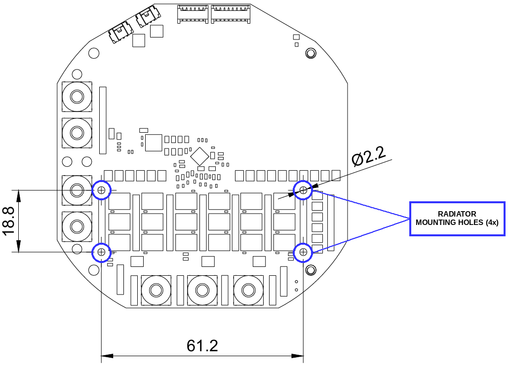
Fig. 10 Radiator mounting holes#
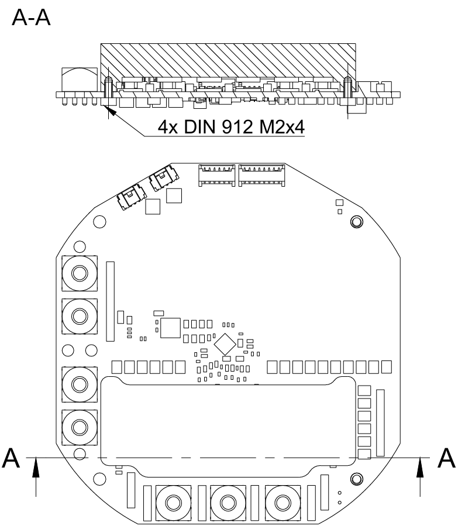
Fig. 11 Radiator drawing, section A-A - radiator fixed to the PCB#
Tighten the screws with a torque of 0.2 Nm. Overtightening bends the PCB and loads the MOSFET solder joints.
Secure the screws against loosening caused by vibration with threadlocker (e.g. medium strength, removable) and/or spring washers. When washers are used, check that the screw still engages enough threads in the standoff - a longer screw may be needed.
Thermal interface material (TIM)
Danger
The MD200 MOSFETs are dual-side cooled packages with an exposed metal pad on top. These pads are electrically live - they carry the bus voltage and the switching phase voltage. The reference radiator is made of bare (non-anodized) aluminium, which is electrically conductive. The TIM between the MOSFETs and the radiator must be electrically insulating. Never mount the radiator directly on the MOSFETs or with an electrically conductive paste.
MAB does not recommend a particular thermal pad. When choosing the TIM, consider:
Property |
Recommendation |
|---|---|
Type |
Soft, electrically insulating thermal gap pad (e.g. silicone based) |
Electrical insulation |
Electrically non-conductive, with a breakdown voltage well above the maximum bus voltage (60 V) plus switching overshoots - typical gap pads offer several kV |
Thermal conductivity |
As high as possible, at least approx. 3 W/(m·K) |
Thickness |
Matched to the gap between the MOSFETs and the radiator in your design (check it in the 3D model), so that the pad is compressed by approx. 10 - 30%. A thicker pad than necessary increases the thermal resistance |
Hardness |
Soft (low Shore 00 hardness), so that the compression does not load the MOSFETs and their solder joints |
Operating temperature |
At least 125°C |
The pad must cover all exposed MOSFET pads completely.
Deburr the radiator edges and keep the contact surfaces clean - a burr or a metal chip can cut through the pad and short the MOSFETs to the radiator.
Make sure the radiator does not touch any other component or copper on the board.
After assembly, check with a multimeter that there is no electrical connection between the radiator and the VCC and motor phase terminals.
Note
The performance of MD200 with a heatsink has not been characterized yet. The values in Thermal characteristics (free air, no heatsink) can be treated as conservative.
Connectors pinout#
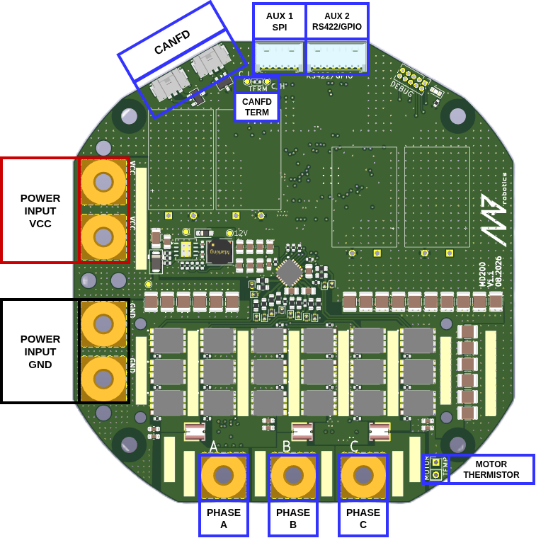
Fig. 12 MD200 connectors overview#
CAN FD#
MD200 has two CAN FD connectors (Molex Micro-Lock Plus, PCB header 505567-0371, mating housing 505565-0301). Both connectors are connected in parallel for easy daisy-chaining. The CAN FD port is not isolated. The termination resistor can be mounted on the solder pads marked TERM if necessary.
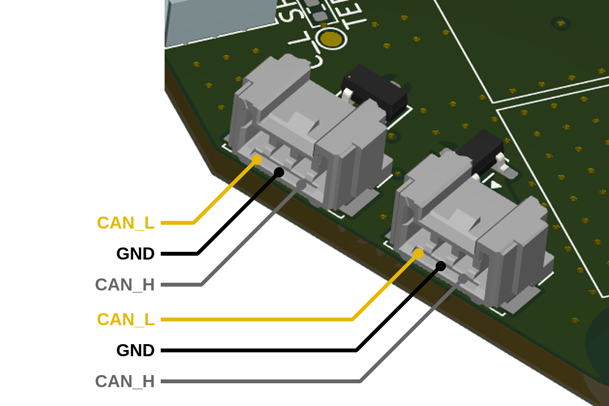
Fig. 13 CAN FD connector pinout (both connectors are identical)#
The CAN FD cable supplied with MD200, used to connect it to CANdle, follows the wire colors listed in the table below.
Pin |
Signal |
Wire color |
|---|---|---|
1 |
CAN_H |
grey |
2 |
GND |
black |
3 |
CAN_L |
yellow |
Warning
Always make sure CAN bus lines are not shorted to the positive power rail. Applying supply voltage to these pins will cause permanent damage to the controller!
Thermistor connection#
MD200 measures the MOSFET and motor temperature in the same way as MD80. The motor shutdown temperature is configurable up to 140°C max with a hysteresis of 20°C. The driver shutdown temperature is fixed at 100°C with a hysteresis of 20°C. The MOSFET thermistor is built in directly under the power stage and only the motor thermistor pads (marked MOTOR TEMP) are available.
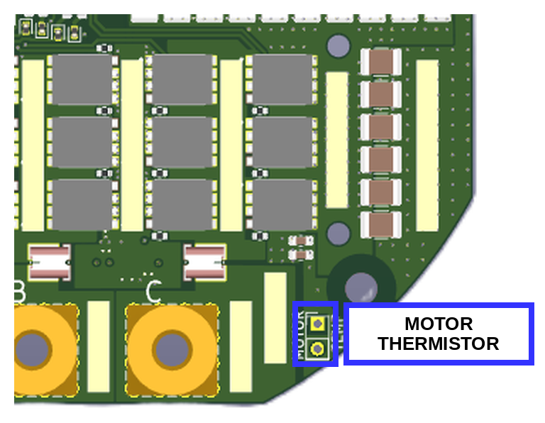
Fig. 14 Motor thermistor pads (MOTOR TEMP)#
Note
We recommend using MABs thermistors. Using other thermistors may result in imprecise temperature readout.
Aux connectors#
MD200 has the same auxiliary connectors as MD80.
Aux 1 connector (SPI) is dedicated to connect MABs ME_am and other SPI based encoders (530480650 Molex PicoBlade).
Aux 2 connector (RS422/GPIO) has two user-configurable GPIOs and an RS422 interface for connecting to the RLS Axim2 encoder (530480810 Molex PicoBlade). AUX GPIO A pin can be used as an automatic brake control output signal, the same way as on MD80. See Brakes for details.
Warning
While auxiliary connector pins are 5V tolerant, we recommend using 3.3V logic if possible.
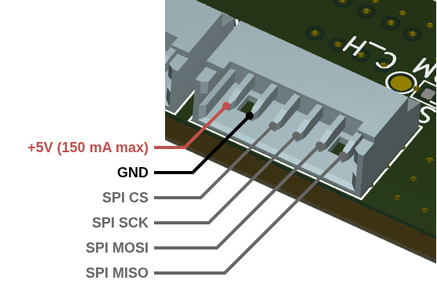
Fig. 15 Aux 1 (SPI) connector pinout#
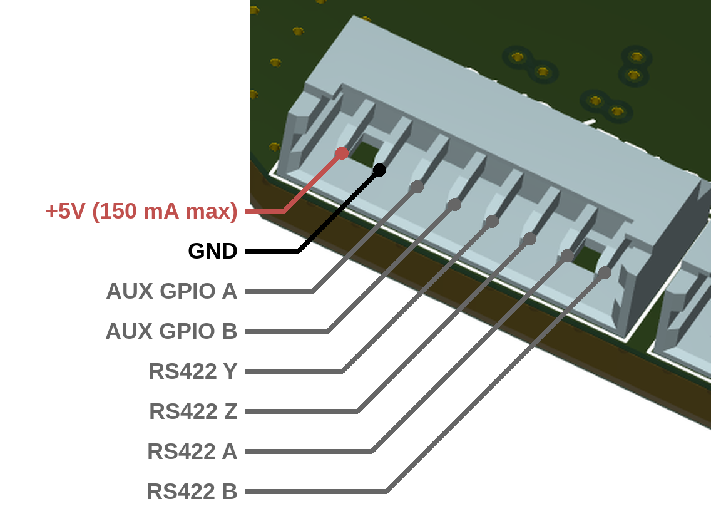
Fig. 16 Aux 2 (RS422/GPIO) connector pinout#
Warning
By default the RS422 transceiver is not soldered on the boards. If you plan to use the RLS Axim2 encoder with MD200, let us know when ordering the board.
Electrical integration#
Power and motor wiring#
The power supply and the motor phases are connected to seven M4x0.8 threaded terminals (see Connectors pinout). Use M4 ring (tubular) cable lugs and M4 screws, and tighten them with a torque of 1.4 Nm. MD200 has two positive (VCC) and two ground (GND) supply terminals, connected in parallel, for easy daisy-chaining of the power supply between controllers.
Parameter |
Value |
|---|---|
Terminals |
7x M4x0.8 (2x VCC, 2x GND, 3x motor phase) |
Terminal current rating |
175 A continuous |
Terminal screw tightening torque |
1.4 Nm |
Cable and cable lugs |
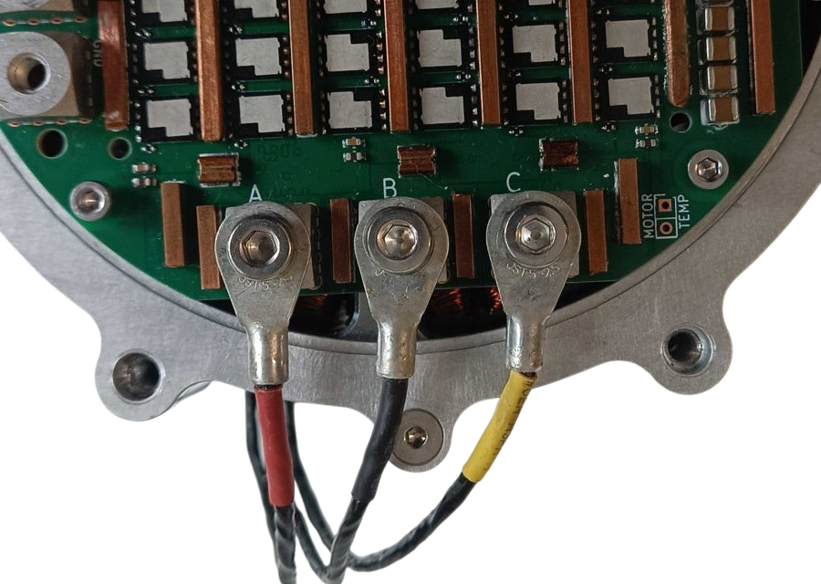
Fig. 17 Motor phases connected to terminals A, B and C with ring (tubular) cable lugs#
Warning
The order of the motor phases does not matter (does not change the rotation direction) as long as the order is not changed after the calibration. Each modification in phase order should be followed by a full motor calibration.
Power source#
MD200 works with supply voltages of 24 - 48 V nominal (12 - 60 V maximum). The power source, e.g. a battery or a power supply unit, must meet three requirements:
Correct polarity - MD200 does not have reverse polarity protection.
Precharge - a precharge circuit must be placed between the power source and MD200 to limit the inrush current into the DC bus capacitors when the supply is connected.
Regenerative energy - when braking, MD200 feeds energy back to the supply. The power source must be able to absorb this energy (e.g. a battery), or a braking resistor must be used. A power supply that cannot sink current lets the bus voltage rise.
Warning
Reverse polarity or a bus voltage above 60 V will permanently damage the controller.
Power cable sizing#
Quick recommendation for a single MD200 at up to 1.5 kW, with a supply cable of up to 1 m:
Supply voltage |
Recommended cable |
Result (1 m, 1.5 kW) |
|---|---|---|
12 V |
not recommended for high power; if used, 6 mm² and as short as possible |
6.0% voltage drop, 90 W loss |
24 V |
6 mm² |
1.5% voltage drop, 22 W loss |
48 V |
2.5 mm² |
0.9% voltage drop, 13 W loss |
60 V |
2.5 mm² |
0.6% voltage drop, 9 W loss |
A higher supply voltage means a lower current for the same power, so a thinner cable can be used and less energy is lost in the wiring. Whenever possible, use 48 V or 60 V for high-power actuators.
Note
These recommendations are a starting point. For longer cables, several actuators on one supply line or high environment temperature, choose a thicker cable using the details below.
Details#
The tables below show the voltage drop and power loss in the supply cable of a single MD200 drawing 1.5 kW. The cable is 1 m long (2 m of copper in total for VCC and GND), copper at 20°C.
Supply current at 1.5 kW
Supply voltage |
12 V |
24 V |
48 V |
60 V |
|---|---|---|---|---|
Current |
125 A |
62.5 A |
31.3 A |
25 A |
Voltage drop (percentage of the supply voltage)
Cable |
12 V |
24 V |
48 V |
60 V |
|---|---|---|---|---|
2.5 mm² |
1.72 V (14.3%) |
0.86 V (3.6%) |
0.43 V (0.9%) |
0.34 V (0.6%) |
4 mm² |
1.08 V (9.0%) |
0.54 V (2.2%) |
0.27 V (0.6%) |
0.22 V (0.4%) |
6 mm² |
0.72 V (6.0%) |
0.36 V (1.5%) |
0.18 V (0.4%) |
0.14 V (0.2%) |
Power loss in the cable
Cable |
12 V |
24 V |
48 V |
60 V |
|---|---|---|---|---|
2.5 mm² |
215 W |
53.8 W |
13.4 W |
8.6 W |
4 mm² |
134 W |
33.6 W |
8.4 W |
5.4 W |
6 mm² |
89.6 W |
22.4 W |
5.6 W |
3.6 W |
The voltage drop grows linearly with the current and the cable length, and the power loss grows linearly with the cable length and with the square of the current. Halving the supply voltage doubles the current and therefore quadruples the power loss in the same cable.
Important
The right cable and lug depend on the application. Consider:
cable length - the losses grow linearly with the length,
number of actuators in line - when the supply is daisy-chained, the first segment carries the current of all downstream controllers (see the example below),
environment temperature - copper resistance rises by about 0.4% per °C, and the cable current rating must be derated at high temperatures,
accepted temperature rise of the cable and the lugs,
duty cycle - peak power is usually drawn only for a short time, while the cable heating depends on the average (RMS) current.
Cable lugs#
MD200 supply terminals accept M4 ring (tubular) cable lugs, matched to the cable cross-section. The lugs below are examples that fit MD200. Choose the lug based on the cable and the requirements of your application.
Example part (Würth Elektronik) |
Screw size |
Cable cross-section |
|---|---|---|
55804025 |
M4 |
2.5 mm² |
5580404 |
M4 |
4 mm² |
5580406 |
M4 |
6 mm² |
Wiring example#
The example below shows three MD200 controllers connected to one power source and one CANdle.
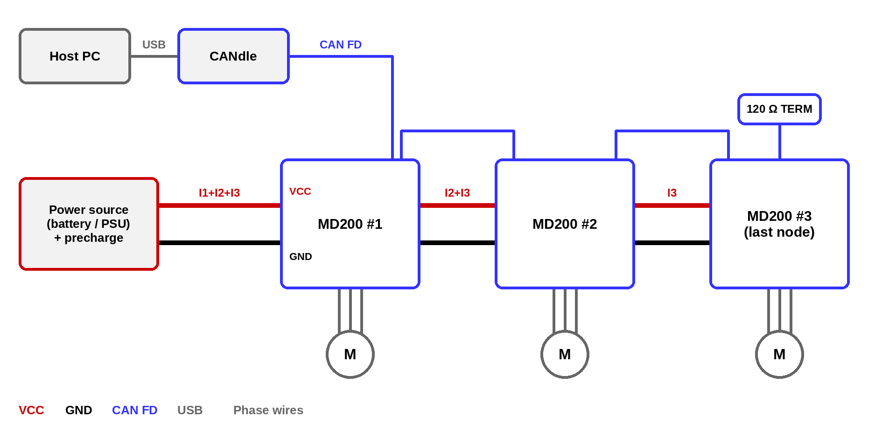
Fig. 18 Power and CAN FD daisy-chaining of three MD200 controllers#
Power - the power source is connected to the first MD200. The two VCC and two GND terminals of each MD200 are connected in parallel, so the supply can be passed on to the next controller. Each segment carries the current of all controllers behind it, so the segment closest to the power source must be sized for the sum of their currents. For a long chain or high power, connect each MD200 directly to a common distribution point (e.g. a bus bar) instead.
Precharge - a precharge circuit must be placed between the power source and the first MD200 (see Power source).
CAN FD - CANdle is connected to the first MD200, and the two CAN FD connectors of each MD200 pass the bus on to the next controller. The bus must be terminated with 120 Ω at both ends: CANdle at one end and the last MD200 at the other (TERM pads, see Connectors pinout).
Motor phases - each motor is connected only to its own MD200.
After wiring, connect the CAN bus and power the controller. When powered, the controller should blink shortly with a green LED once a second. If the red LED is fully on there are some errors that should be cleared after the calibration.
Thermal characteristics#
Test conditions and setup
MD200 was tested at supply voltages of 24, 36, 48 and 60 V in two setups:
inductive load - star-connected inductors simulating a motor winding,
dynamometer - QS205 hub motor braked by MD200, driven by an AKE90-8 load motor.
Each run held a constant phase current for up to 120 s. A run ended either after 120 s or when the driver over-temperature protection tripped at 100°C. All tests were performed in free air at approx. 20°C ambient temperature, with no heatsink and no forced airflow. The temperature was measured with the onboard power stage thermistor.
Note
The continuous current values below are the highest currents at which MD200 completed 120 s without thermal cutoff. In some of these runs the driver temperature was still rising at the end of the run. With a heatsink or forced airflow, higher continuous currents can be achieved.
Quantity |
Inductive load |
Dynamometer |
|---|---|---|
Continuous phase current (120 s, no thermal cutoff) |
70 A at 24 V and 48 V, 80 A at 36 V, 60 A at 60 V |
80 A at 24 V, 70 A at 36 V and 48 V, 60 A at 60 V |
Time to thermal cutoff at 100 A |
40 - 71 s |
39 - 64 s |
Time to thermal cutoff at 150 A |
15 - 19 s |
14 - 19 s |
Time to thermal cutoff at 200 A |
9.7 - 10.8 s |
|
Max. mechanical power |
1584 W (60 V, 150 A) |
|
Max. power fed back to the supply |
858 W (60 V, 90 A) |
Tip
The plots below are interactive: hover to read the values, drag to zoom (double-click to reset) and click the legend to show or hide curves. The temperature plots can be switched between Curves (the measured runs) and Thermal map (temperature over time and phase current, interpolated between the measured runs).
Test I - inductive load#
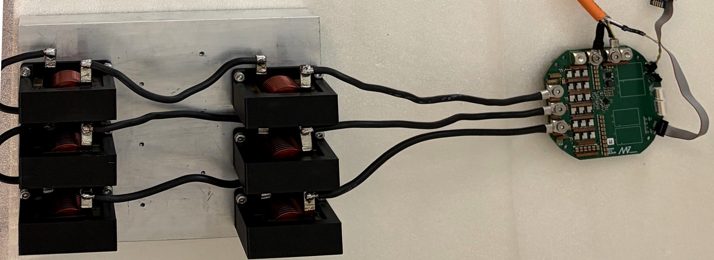
Fig. 19 Inductive load setup: MD200 (right) drives three phases loaded with star-connected inductors#
In this setup there is no shaft, so all the power is converted to heat. The phase current was swept from 10 A to 200 A in 10 A steps.
Between 80 A and 130 A, the time to cutoff at 60 V is 30 - 50% shorter than at 24 V (100 A: 70.6 s at 24 V, 40.1 s at 60 V). Above approx. 170 A all voltages give similar times of 9.7 - 14 s.
24 V: no cutoff within 120 s up to 70 A (82.5°C at 70 A)
36 V: no cutoff within 120 s up to 80 A (99.1°C at 80 A)
48 V: no cutoff within 120 s up to 70 A (94.4°C at 70 A)
60 V: no cutoff within 120 s up to 60 A (88.6°C at 60 A)
Test II - dynamometer#
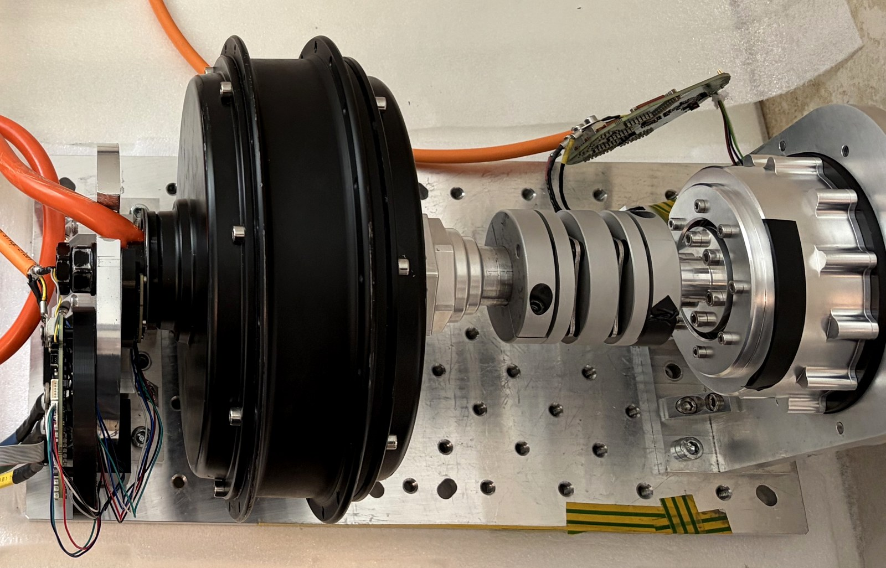
Fig. 20 Dynamometer: QS205 hub motor with MD200 mounted on a 3D printed rear cover, coupled to the AKE90-8 load motor (right)#
The AKE90-8 drove the shaft while MD200 braked the QS205 at the set phase current, from 10 A to 150 A in 10 A steps. Mechanical power is calculated from the torque estimated by MD200 and the measured shaft speed. Both drives were powered from the same supply, so power circulates in a closed loop and the supply delivers only the losses of both drives.
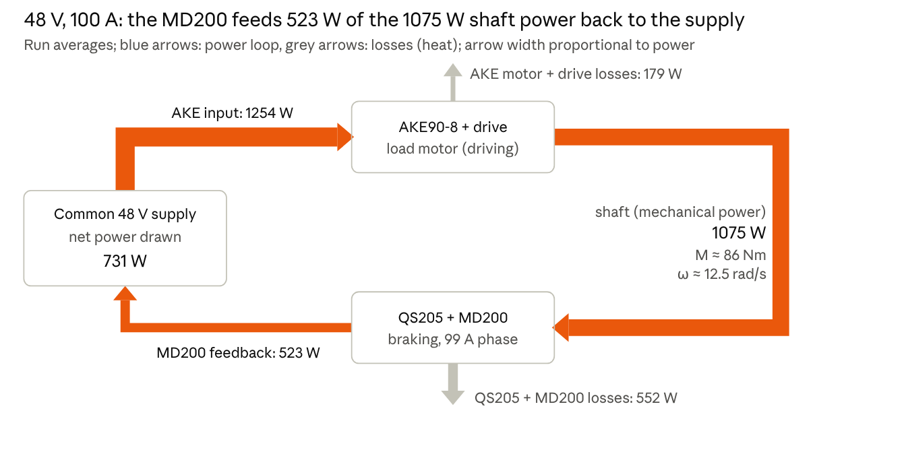
Fig. 21 Power flow at 48 V, 100 A, averages over a 44 s run#
At low currents (10 - 20 A) MD200 feeds 77 - 86% of the shaft power back to the DC bus. At high currents the losses in the motor exceed the shaft power, and MD200 draws power from the bus while braking (24 V from 90 A, 36 V at 130 - 140 A).
Supply voltage |
Shaft speed, 10 → 150 A [rad/s] |
Max. shaft power |
Max. power fed back |
Continuous current, 120 s |
|---|---|---|---|---|
60 V |
21.8 → 12.2 |
1584 W (150 A) |
858 W (90 A) |
60 A (86.9°C) |
48 V |
17.1 → 9.0 |
1214 W (140 A) |
570 W (80 A) |
70 A (96.7°C) |
36 V |
12.6 → 6.7 (140 A) |
817 W (130 A) |
347 W (60 A) |
70 A (88.7°C) |
24 V |
8.2 → 2.9 |
416 W (110 A) |
159 W (50 A) |
80 A (93.5°C) |
24 V: no cutoff within 120 s up to 80 A (93.5°C at 80 A)
36 V: no cutoff within 120 s up to 70 A (88.7°C at 70 A)
48 V: no cutoff within 120 s up to 70 A (96.7°C at 70 A)
60 V: no cutoff within 120 s up to 60 A (86.9°C at 60 A)
Peak current#
The maximum phase current available to users is limited to 200 A.
The time for which MD200 can deliver a high phase current is limited by the driver over-temperature protection (100°C). Starting from approx. 30°C in free air, the inductive load test gave the following times to thermal cutoff:
Phase current |
Time to thermal cutoff |
|---|---|
100 A |
40 - 71 s (60 V - 24 V) |
150 A |
15 - 19 s (60 V - 24 V) |
200 A |
approx. 10 s (all supply voltages) |
Above approx. 170 A the time to cutoff hardly depends on the supply voltage. A higher starting temperature shortens these times, and a heatsink or forced airflow lengthens them.